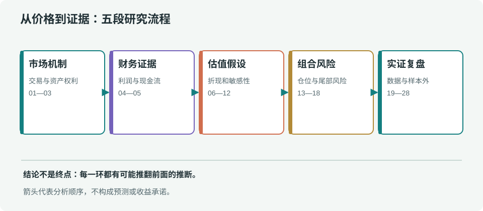

SECURITIES · ANALYSIS · EVIDENCE
价格会波动，
判断需要证据。
从一笔交易、一份财报开始，建立可核验的证券投资研究流程：先理解资产权利与市场交易，再追踪利润和现金流，最后检验估值、风险和策略。

COURSE ATLAS
从基础机制到研究实践
每篇都可独立阅读；建议先用前五章建立共同语言。
MODULE 01
市场与财务认知
理解证券权利、成交规则、会计信息与财务指标
证券投资导论
投资与投机 · 证券市场功能 · A股市场全景 · 注册制改革
图解版 · 已重构CHAPTER 02主要证券品种
股票/A股港股美股 · 债券与可转债 · ETF与LOF · 期权期货入门
图解版 · 已重构CHAPTER 03交易机制与规则
集合竞价 · 连续竞价 · 涨跌停制度 · T+1与融资融券
图解版 · 已重构CHAPTER 04财务报表入门
资产负债表 · 利润表 · 现金流量表 · 三大报表勾稽关系
图解版 · 已重构CHAPTER 05财务比率分析
盈利能力/ROE/ROA · 偿债能力/流动比率 · 营运能力/周转率 · 成长能力/营收增速
图解版 · 已重构MODULE 02
宏观、公司与价值
从经济与行业环境进入估值与研究流程
宏观经济与市场
GDP/CPI/PMI指标 · 货币政策工具 · 财政政策 · 利率与股市关系
图解版 · 已重构CHAPTER 07行业分析方法
行业生命周期 · 波特五力模型 · 产业链分析 · 行业轮动规律
图解版 · 已重构CHAPTER 08绝对估值法
DCF模型 · 自由现金流FCFF/FCFE · WACC加权资本成本 · 终值假设的陷阱
图解版 · 已重构CHAPTER 09相对估值法(上)
PE市盈率 · PEG指标 · PB市净率 · PE-G与PB-ROE框架
图解版 · 已重构CHAPTER 10相对估值法(下)
PS市销率 · EV/EBITDA倍数 · DDM股利折现 · 退出倍数法EMM
图解版 · 已重构CHAPTER 11成长股估值
多阶段FCFF · 成长减速 · 股权稀释 · PEGR证据边界
图解版 · 已重构CHAPTER 12基本面分析实战
商业模式 · 单位经济性 · 盈利质量 · 可证伪研究
图解版 · 已重构MODULE 03
价格、组合与风险
分辨技术信号的适用边界，构建风险约束
技术分析基础
OHLC K线 · 价格复权 · 假突破 · 前视偏差
图解版 · 已重构CHAPTER 14技术指标精讲
SMA/EMA · MACD · Wilder RSI · 布林带与回测
图解版 · 已重构CHAPTER 15现代投资组合理论
协方差与相关性 · 有效前沿 · CAPM Beta · 多因子风险
图解版 · 已重构CHAPTER 16风险管理体系
VaR在险价值 · 最大回撤 · 压力测试 · 仓位管理与凯利公式
现有版本 · 待精修CHAPTER 17行为金融学
前景理论 · 过度自信/损失厌恶 · 羊群效应 · 情绪指标实战
现有版本 · 待精修CHAPTER 18投资策略流派
价值投资 · 成长投资 · 动量策略 · 索罗斯反身性理论
现有版本 · 待精修MODULE 04
实证与量化工具
从因子数据到回测与真实执行
量化选股入门
因子投资基础 · Alpha与Beta分离 · 回测框架 · 过拟合陷阱
现有版本 · 待精修CHAPTER 20多因子模型实战
五大经典因子 · 因子构建与标准化 · IC/IR评价体系 · 因子拥挤度监控
现有版本 · 待精修CHAPTER 21前沿因子探索
研发因子 · 业绩透支度POR · 资金流因子 · 行业轮动因子化
现有版本 · 待精修CHAPTER 22行业估值与轮动
行业PB-ROE矩阵 · 景气投资四阶段 · 行业轮动策略 · 拥挤度预警
现有版本 · 待精修CHAPTER 23数据获取与处理
Wind/Choice/Tushare · 数据清洗 · 复权处理 · API调用实战
现有版本 · 待精修CHAPTER 24Python量化工具链
Pandas/NumPy · Matplotlib可视化 · TA-Lib指标库 · 回测框架搭建
现有版本 · 待精修CHAPTER 25实盘交易系统
模拟交易到实盘 · QMT/Ptrade平台 · 程序化交易监管新规 · 滑点与冲击成本
现有版本 · 待精修MODULE 05
前沿与综合研究
把AI辅助、全球配置与完整案例串起来